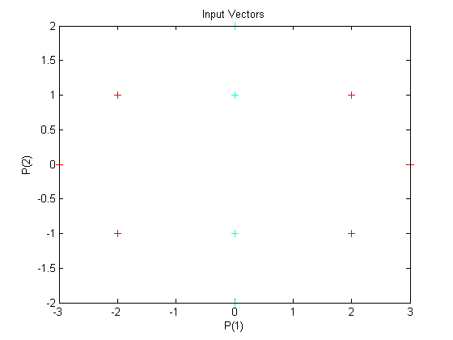
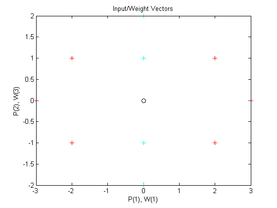
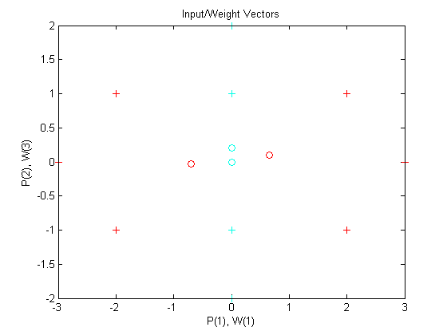

Learning Vector Quantization
An LVQ network is trained to classify input vectors according to given targets.
Let P be 10 2-element example input vectors and C be the classes these vectors fall into. These classes can be transformed into vectors to be used as targets, T, with IND2VEC.
P = [-3 -2 -2 0 0 0 0 +2 +2 +3;
0 +1 -1 +2 +1 -1 -2 +1 -1 0];
C = [1 1 1 2 2 2 2 1 1 1];
T = ind2vec(C);
Here the data points are plotted. Red = class 1, Cyan = class 2. The LVQ network represents clusters of vectors with hidden neurons, and groups the clusters with output neurons to form the desired classes.
colormap(hsv); plotvec(P,C) title('Input Vectors'); xlabel('P(1)'); ylabel('P(2)');
NEWLVQ creates an LVQ layer and here takes four arguments: Rx2 matrix of min and max values for R input elements, number of hidden neurons, element vector of typical class percentages, and learning rate,
net = newlvq(minmax(P),4,[.6 .4],0.1);
The competitive neuron weight vectors are plotted as follows.
hold on W1 = net.IW{1}; plot(W1(1,1),W1(1,2),'ow') title('Input/Weight Vectors'); xlabel('P(1), W(1)'); ylabel('P(2), W(3)');
To train the network, first override the default number of epochs, and then train the network. When it is finished, replot the input vectors '+' and the competitive neurons' weight vectors 'o'. Red = class 1, Cyan = class 2.
net.trainParam.epochs=150; net.trainParam.show=Inf; net=train(net,P,T); cla; plotvec(P,C); hold on; plotvec(net.IW{1}',vec2ind(net.LW{2}),'o');
Now use the LVQ network as a classifier, where each neuron corresponds to a different category. Present the input vector [0.2; 1]. Red = class 1, Cyan = class 2.
p = [0.2; 1]; a = vec2ind(sim(net,p))
a =
2